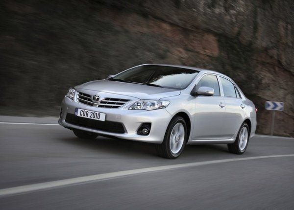
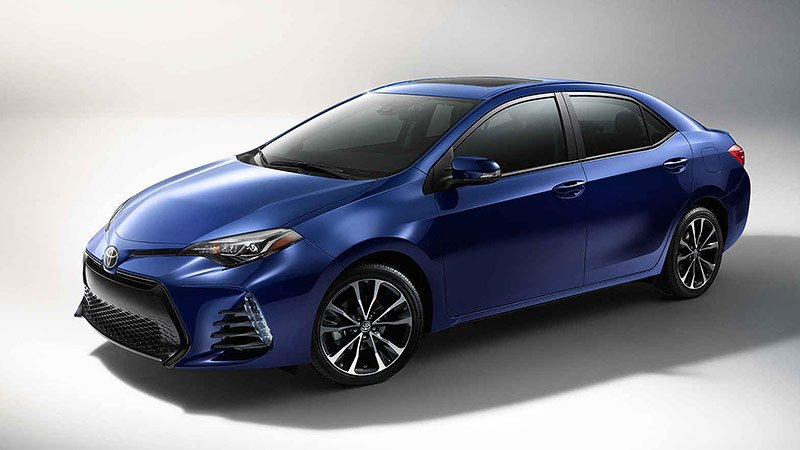
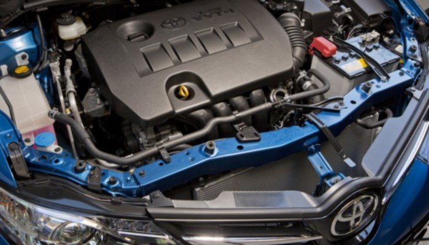
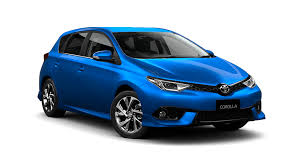

Toyota Corolla — це автомобілі компактного класу, що виробляються корпорацією Toyota з 1966 року.
У 2006 році назві Corolla виповнилося 40 років, протягом яких змінилося десять поколінь цих доступних і надійних автомобілів, а загальний обсяг випуску перевалив за 32 мільйонів. І ця рекордна цифра продажів, занесена до Книги рекордів Гіннесса, збільшується щорічно.
Королла стала найуспішнішою моделлю Тойоти і займає 1-ше місце у списку найбільш продаваних автомобілів світу.

Перша Toyota Corolla була представлена в Японії в жовтні 1966 року - це був маленький, довжиною всього 3845 мм, задньопривідний седан з двома дверима. Чотирициліндровий нижньовальний двигун об'ємом 1,1 л розвивав 60 к.с., коробка передач була чотириступінчастою, задня підвіска - ресорною, а передня - незалежною, з поперечною ресорою як пружнний елемент.
У травні 1967 року з'явилися модифікація з чотиридверним кузовом, а також тридверний універсал. Ще через рік у продаж надійшло купе Corolla Sprinter. Тоді ж почалися продажі в США.

На початку червня 2013 року дебютувала Toyota Corolla для ринку Європи. Лінійку двигунів представлять бензинові двигуни об'ємом 1,3 л 2NZ-FE (99 к.с.), 1,6 л 1ZR-FE (132 к.с. та 122 к.с.), 1,8 л 2ZR-FAE (140 к.с.) а також 90-сильний 1,4 л дизельний двигун 1ND-TV D-4D. Коробок передач три - 6 ст. МКПП, варіатор Multidrive S, а також 6-ти ступенева роботизована трансмісія - Multi Mode Transmission, яка пропонується виключно для дизельного двигуна.
Нова Королла трохи більша ніж початкова модель, і має в своєму розпорядженні на диво просторе заднє сидінням з великим запасом місця для ніг. Не дивлячись на стрибок в розмірі, Corolla залишається досить компактним для маневреності та зручним для паркування.
Серце автомобіля Королла - 4-циліндровий двигун 1.8 л з новим варіатором (CVT), який замінив застарілу 4-ступінчасту трансмісію у всіх версіях на базі комплектації L. Ця комбінація забезпечує відмінний середній показник витрати палива 7.35 л/100 км і розтягує паливо по автомагістралі до 5.47 л/100 км. Експлуатаційні якості, проте, залишалися на рівні.
Хоча CVT має тенденцію стримувати оберти двигуна від різкого прискорення, двигун і трансмісія працюють у відносній гармонії. Комплектація Eco експлуатує двигун потужністю 140 к.с., 1.8 л.
Керування автомобілемToyota Corollaстало більш реактивним і дуже безпечним, але не досить поліпшеним, щоб відповідати найкращим представникам свого класу. Разом зі спортивною підвіскою, передова комплектація S трохи приємніша в управлінні, без істотних відхилень в параметрах комфортності під час руху.
В 2016 році модель оновили, змінивши зовнішній вигляд.

Нова Toyota Corolla стала престижнішою та елегантнішою, ніж будь-коли раніше. Нове футуристичне зовнішнє оформлення скрізь справлятиме чудове враження! У салоні все продумано до дрібниць та забезпечено максимальний комфорт, зокрема, простір для ніг — найбільший у цьому класі. До ваших послуг — низка найсучасніших систем та потужні й ощадливі двигуни, що робить автомобіль Toyota Corolla вибором, що надихає.